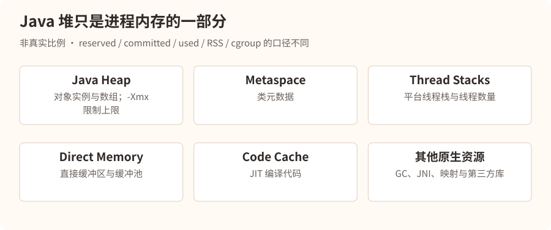
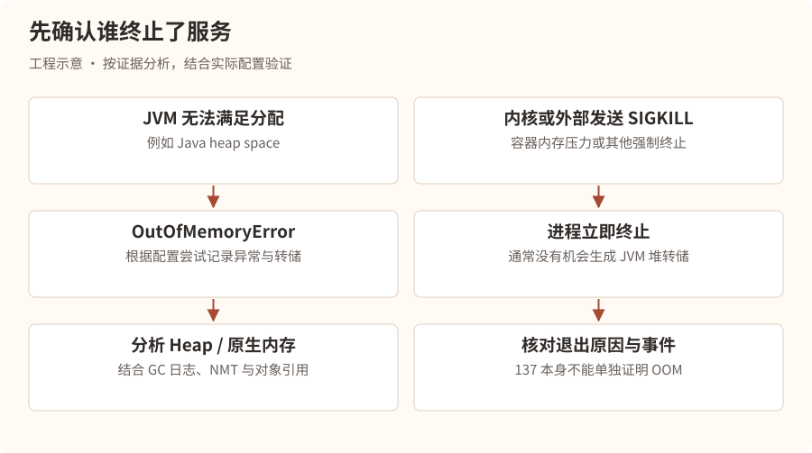
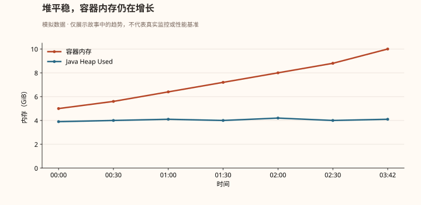
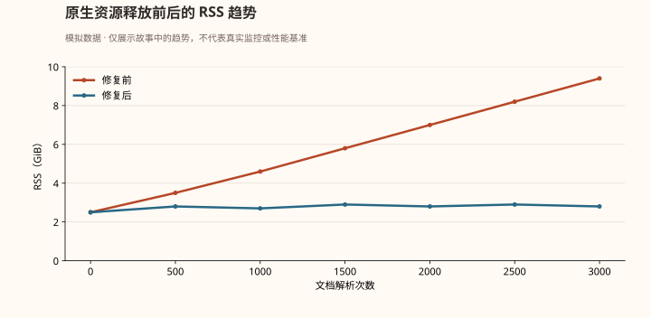
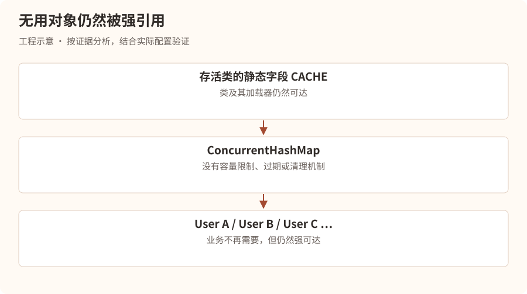

第一幕：一台被 Linux 判处死刑的服务器
凌晨 3:42。
星海科技研发中心。
林川刚刚结束上一场 CPU 事故的复盘，原本以为终于可以安稳睡觉。
突然，手机再次响起。
事故快照 · 虚构场景
| 项目 | 观测值 |
|---|---|
| 等级与服务 | P1 · rag-service-prod-02 |
| 时间 | 03:42:17 |
| 宿主机内存 | 16GB |
| JVM 最大堆 | 8GiB（-Xmx8g） |
| 退出码 | 137 |
| 异常 | 进程突然消失，无 Java OutOfMemoryError 日志 |
林川看着监控，皱起眉头。
“奇怪，服务器有 16GB 内存，我给 JVM 配置了 -Xmx8g，按理说还有 8GB 留给系统。”
“为什么会内存不足？”
电话另一端，技术负责人陈默沉默了几秒。
“林川，你是不是认为 JVM 最大堆内存等于 Java 进程最大内存？”
“难道不是？”
“当然不是。”
“那 -Xmx8g 到底限制了什么？”
“只限制 Java 堆的最大容量，不是整个 JVM 进程的内存上限。”
陈默打开远程会议。
“今晚，我带你认识一个比 CPU 100% 更隐蔽的敌人。”
“内存。”
第二幕：内存王国——JVM 到底占用了多少内存？
陈默在白板上画了一座城市。
“你可以把 JVM 想象成一座城市。”
“Java 堆只是城市里最大的一片住宅区。”
“但城市不可能只有住宅区。”
“还需要道路、仓库、行政中心、工厂，以及工人自己的休息空间。”
林川点点头。
“也就是说，Java 进程除了堆，还有其他内存开销？”
“对。”
JVM 进程的内存版图

进程的 RSS、虚拟内存和 JVM 各内存区域不是简单的一一对应关系，不能把配置上限之和当作实际物理内存。
陈默解释：
“Java 进程可能消耗的内存，包括堆、元空间、线程栈、直接内存、JIT 代码缓存、GC 数据结构和其他原生内存。”
“因此，即使堆内存没有达到 8GB，整个进程仍然可能超过操作系统或容器的内存限制。”
林川突然想到：
“那我是不是只要把 -Xmx 设置小一点，就能解决？”
“未必。”
“为什么？”
“因为你还不知道内存究竟消耗在哪里。”
“如果是线程数量异常，降低堆大小不一定有用。”
“如果是 Direct Memory 不断增长，降低堆大小可能只是给它暂时腾出空间。”
“如果是容器限制太小，还可能需要重新规划整个内存预算。”
陈默在白板上写下：
进程内存使用量 ≠ Java Heap 使用量
“这是今天你必须记住的第一件事。”
第三幕：137 号死亡通知书
林川翻阅应用日志。
最后一条日志停留在：
03:42:16 INFO DocumentParser
Parsing document: handbook-2026.pdf
随后，没有异常堆栈，没有 OutOfMemoryError，进程直接消失。
“为什么没有 Java 异常？”
陈默问：
“如果 JVM 自己发现 Java 堆空间不足，会发生什么？”
“通常抛出 java.lang.OutOfMemoryError。”
“那如果是 Linux 内核直接杀死进程呢？”
林川愣住了。
“JVM 根本没有机会抛异常？”
“没错。”
两种完全不同的死亡方式
陈默画了两条路径。

“所以，137 代表什么？”陈默问。
林川回答：
“通常是 128 + 9，也就是进程因 SIGKILL 终止。”
“很好。但要注意，退出码 137 不能单独证明发生了 OOM。 管理员执行 kill -9，或者其他机制发送 SIGKILL，也可能出现 137。”
“我们必须继续寻找证据。”
第一步：检查容器退出原因
假设服务运行在 Kubernetes 中：
kubectl describe pod rag-service-xxx
林川看到：
Last State:
Terminated:
Reason: OOMKilled
Exit Code: 137
“这下可以确定了！”
“基本可以确认该容器被判定为 OOMKilled。但我们仍然需要弄清楚具体的内存压力来源。”
第二步：查看容器资源限制
kubectl get pod rag-service-xxx -o yaml
关键配置：
resources:
requests:
memory: "4Gi"
limits:
memory: "10Gi"
林川突然发现了问题。
“服务器虽然有 16GB，但容器的内存限制只有 10Gi！”
“对。容器能使用的内存，并不直接等于宿主机物理内存。”
陈默继续说道：
“requests.memory 主要用于调度与资源保障相关机制；limits.memory 才是这里需要重点关注的内存上限。”
“所以，我们应该以容器的 10Gi 为基础制定 JVM 内存预算，而不是宿主机的 16GB。”
一个危险的内存配置
| 事故配置 | 内存预算 |
|---|---|
| 容器上限 | 10GiB |
| 堆上限 | 8GiB |
| 其他区域与余量 | 2GiB |
堆上限占容器限制的 80%，剩余预算是否足够需要实测。
“但是，”林川问，“我们现在只是发现配置有风险，仍然不知道究竟是什么吃掉了内存。”
“正确。”
陈默打开了另一张监控图。
第四幕：不断膨胀的幽灵
监控数据显示：

林川盯着屏幕。
“Java 堆一直只有 4GB 左右，但是容器内存从 5GB 一直涨到 10GB。”
“说明什么？”
“说明内存增长可能主要发生在堆外。”
“没错。不过这里还有一个细节。”
“什么？”
“容器内存指标可能包含文件页缓存等内容，和进程 RSS 不是同一个概念。所以不能仅凭这张图就认定 Direct Memory 泄漏。”
陈默决定进一步调查。
“我们需要区分三类证据：JVM 内部统计、进程内存，以及容器 cgroup 统计。”
工程补充：事故进程已退出，无法再对它执行 jcmd 或读取其 /proc。下文的在线检查来自尚存活的同版本实例和受控复现实验；事后分析同时使用事先采集的指标、容器退出记录与内核事件。命令中的 PID 只是占位示例。
第一件武器：Native Memory Tracking
陈默问：
“你知道 JVM 自带一个叫 NMT 的工具吗？”
“不知道。”
“全称 Native Memory Tracking，可以跟踪 HotSpot JVM 自身管理的多类原生内存分配。”
“不过有两个限制：需要在 JVM 启动时启用，而且它不能完整覆盖所有第三方原生库和所有内存映射。”
他们检查了事故实例的启动配置。
-XX:NativeMemoryTracking=summary
“幸好这个服务之前就启用了 NMT。”
陈默解释：
“如果没有提前启用，不能指望在进程运行中直接开启完整的 NMT 跟踪。我们需要通过新实例或下次启动启用。”
查看统计：
jcmd 18432 VM.native_memory summary scale=MB
以下为合并其他类别后的教学输出，数值用于说明 reserved、committed 与 used 的区别，不是逐字复制的 NMT 日志：
Native Memory Tracking:
Total: reserved=13500MB, committed=9100MB
- Java Heap
reserved=8192MB, committed=8192MB
- Class
reserved=1050MB, committed=180MB
- Thread
reserved=1300MB, committed=125MB
- Code
reserved=250MB, committed=95MB
- Other categories (combined for illustration)
reserved=2708MB, committed=508MB
林川发现：
“为什么 Java Heap committed 是 8192MB，但监控中使用量只有 4GB？”
陈默解释：
“因为 committed 和 used 不是同一个概念。”
“committed 代表 JVM 已向操作系统提交的内存容量，而堆 used 代表当前堆中已使用的容量。”
“而且 committed 也不能直接等同于实际 RSS。”
“那 reserved 呢？”
“reserved 通常表示保留的虚拟地址空间，不代表已经占用了等量物理内存。”
陈默在白板上写下：
| 指标 | 含义 |
|---|---|
| Reserved | 预留的虚拟地址空间 |
| Committed | 已提交的内存容量 |
| Heap Used | 堆中当前已使用的空间 |
| RSS | 进程实际驻留在物理内存中的页面量 |
| Cgroup Memory | 容器所属 cgroup 计费的内存使用量 |
“这些指标口径不同，不能混为一谈。”
林川问：
“可是 NMT 没发现特别明显的增长，怎么办？”
陈默回答：
“这反而是一条线索。”
“如果 JVM 自己跟踪的原生内存变化不大，但进程 RSS 持续增长，就需要怀疑 NMT 覆盖不到的原生分配或内存映射。”
“接下来查操作系统。”
第二件武器：进程内存
cat /proc/18432/status
重点关注：
VmRSS:
VmSize:
Threads:
也可以查看：
cat /proc/18432/smaps_rollup
以及：
pmap -x 18432
陈默补充：
“如果是容器，还要查看 cgroup v2 的 memory.current、memory.stat 和 memory.events 等指标。”
“不同容器运行时、cgroup 版本、权限和命名空间下，路径可能不同。”
林川追问：
“所以我们需要对比 JVM 内存、进程 RSS 和容器内存三条曲线？”
“对。这样才能判断内存到底是被 JVM、原生库，还是文件缓存等其他部分消耗。”
第五幕：真正的凶手——被遗忘的 PDF 页面
凌晨 5:06。
林川终于找到了异常代码。
服务负责解析企业上传的 PDF 文档，再将文本切分并写入向量数据库。
某个开发人员为了提高解析性能，引入了一个原生 PDF 渲染库。
代码经过简化后类似：
public void parsePdf(String path) {
NativePdfDocument document =
NativePdfDocument.open(path);
for (int i = 0; i < document.pageCount(); i++) {
NativePdfPage page = document.loadPage(i);
String text = page.extractText();
saveText(text);
}
}
林川看了半天。
“这有什么问题？”
陈默指向 NativePdfPage。
“它是什么？”
“一个 Java 对象。”
“它背后呢？”
“可能对应原生 PDF 页面资源。”
“那么当 Java 对象不可达的时候，原生资源就一定立即释放了吗？”
林川愣住了。
“不一定。”
“没错。某些原生库要求调用者显式关闭或释放底层资源。”
“如果只依赖 Java GC，而没有按照库的资源管理协议释放原生对象，内存就可能不断累积。”
陈默展示了修复后的伪代码：
public void parsePdf(String path) {
try (NativePdfDocument document =
NativePdfDocument.open(path)) {
for (int i = 0; i < document.pageCount(); i++) {
try (NativePdfPage page =
document.loadPage(i)) {
String text = page.extractText();
saveText(text);
}
}
}
}
这里的 NativePdfDocument、NativePdfPage 是用于讲解的虚构接口，假设它们实现 AutoCloseable。实际使用时必须遵循对应 PDF 库的释放规范。
“原来如此！”林川说道。
“Java 堆中的对象可能被 GC 回收，但是底层原生资源未必按照预期释放。”
“正是这样。”
为什么 GC 没能拯救服务器？
陈默进一步解释：
“GC 主要依据 Java 对象的可达性和堆内存压力工作。”
“但某些原生内存分配不会完整地反映在 Java 堆的使用量里。”
“因此可能出现这样一种情况：”
- Java 堆使用量长期稳定。
- 原生内存持续增加。
- JVM 没有明显的堆空间压力。
- 容器内存逐渐触及限制。
- 最终被 OOM Killer 终止。
“当然，这不意味着所有堆外内存都不受 GC 影响。”陈默补充，“例如某些直接缓冲区具有与 Java 对象生命周期关联的清理机制，但释放时机和实现细节需要具体分析。”
“这次的关键是，我们使用的原生库要求显式释放资源，而代码没有做到。”
如何证明修复有效？
林川提出：
“我们把 close() 加上，然后发布不就行了？”
陈默摇头。
“你怎么证明这就是根因？”
他们做了一个可控的复现实验。
首先，在测试环境中使用固定的 PDF 文件集，连续解析数千次。
记录进程 RSS、容器内存、JVM Heap 和 NMT 数据。
然后分别运行旧版本和修复版本。

“修复后 RSS 没有持续增长！”林川说道。
“这才是更有力的证据。”
“还需要检查资源释放是否影响解析正确性、异常分支是否也能关闭资源，以及并发解析时是否仍然稳定。”
“然后再灰度发布。”
陈默关闭监控页面。
“这次我们不仅修好了代码，还要重新设计容器内存预算，并给原生内存增长增加告警。”
第六幕：另一个世界——如果真的是 Java Heap OOM 呢？
天亮以后，林川以为课程结束了。
陈默却打开了一份新的事故档案。
“刚才是原生内存问题。”
“但 Java 面试官更喜欢问另一种情况。”
“如果出现 java.lang.OutOfMemoryError: Java heap space，你该怎么办？”
林川回答：
“把 -Xmx 调大？”
陈默看了他一眼。
“你又想直接扩容了。”
“……”
“假设你的服务每小时泄漏 500MB 内存，8GB 堆撑不住，换成 16GB 堆就不会泄漏了吗？”
“还是会，只是死得更晚。”
“对。”
“所以你必须先理解什么叫内存泄漏。”
1. 内存溢出与内存泄漏的区别
陈默画了一个仓库。
“假设 Java 堆是一座仓库。”
“正常情况下，你往里面放货物，不需要的货物会被清理出去。”
“但有两种情况会让仓库爆满。”
第一种：仓库确实不够大。
例如业务需要同时处理一个 5GB 的数据集，但可用堆空间只有 2GB。
即使程序没有泄漏，也可能 OOM。
第二种：仓库里堆满了永远不会被清理的旧货。
例如某个静态集合不断保存用户对象，却从来不删除。
public class UserCache {
private static final Map<Long, User> CACHE =
new ConcurrentHashMap<>();
public static void add(User user) {
CACHE.put(user.getId(), user);
}
}
“假设用户数量持续增加，而且缓存没有容量限制、过期或清理机制，会发生什么？”
“Map 会越来越大。”
“GC 能回收这些 User 吗？”
“不能，因为静态 Map 仍然持有它们的引用。”
“这就是典型的 Java 对象滞留问题，可能构成内存泄漏。”
GC 为什么不回收这些对象？
陈默继续解释：
“垃圾回收器不是根据对象有没有业务价值来判断是否回收。”
“而是根据对象是否仍然可达。”
“只要存在从 GC Roots 到对象的引用路径，它就可能继续存活。”
例如：

只要仍然强可达，即使业务已经不需要这些对象，GC 也无法判断它们应被删除。
林川终于理解了。
“所以内存泄漏不一定是内存没有释放，而是对象已经没有业务价值，却仍然被引用着。”
“准确。”
“不过，注意 Java 的内存泄漏与 C/C++ 的典型内存泄漏表现可能不同。”
第七幕：Heap Dump——给内存拍一张尸检照片
“如果你怀疑 Java 堆内存泄漏，怎么找到具体对象？”
陈默问。
林川思考片刻：
“查看 Heap Dump？”
“没错。”
“Heap Dump 就像给 Java 堆拍一张快照，记录堆中对象及其引用关系。”
1. 提前配置 OOM 自动转储
-XX:+HeapDumpOnOutOfMemoryError
-XX:HeapDumpPath=/data/dumps
陈默提醒：
“这个参数很有用，但不是万能的。”
“如果是容器被内核直接 SIGKILL，通常不能指望 JVM 自动生成 Heap Dump。”
“而且 Dump 文件可能很大，可能包含用户数据、Token、密码等敏感信息，必须控制磁盘空间和访问权限。”
2. 手动生成 Heap Dump
jcmd <PID> GC.heap_dump /data/dumps/heap.hprof
“生产环境能随便执行吗？”林川问。
“不能。生成堆转储可能造成明显停顿、I/O 压力和额外内存开销。”
“应先评估实例负载、磁盘容量和业务影响，优先在可隔离实例或测试环境操作。”
“而且默认情况下，这类命令可能触发 Full GC；具体行为与 JDK 版本及参数有关。”
3. 使用 MAT 分析
陈默打开 Eclipse Memory Analyzer，简称 MAT。
“MAT 中有几个重要概念。”
| 概念 | 含义 |
|---|---|
| Histogram | 按类统计对象数量和浅堆大小 |
| Dominator Tree | 根据对象支配关系分析内存保留情况 |
| Shallow Heap | 对象本身占用的堆空间 |
| Retained Heap | 如果对象被移除，理论上可能释放的对象集合所占堆空间 |
| Path to GC Roots | 查找对象为什么仍然可达 |
林川看到：
Class Objects
-------------------------------------
java.util.concurrent.ConcurrentHashMap$Node 2,100,000
com.xinghai.User 1,800,000
byte[] 950,000
java.lang.String 3,500,000
“User 对象这么多，是不是 User 泄漏？”
“不能直接这么判断。”
“对象数量多，可能是业务正常需求，也可能是异常滞留。”
“要结合 Retained Heap、GC Roots 引用链、对象生命周期和业务预期。”
他们打开 Dominator Tree。
发现：
UserCache.CACHE
-> ConcurrentHashMap
-> Node[]
-> User
-> User
-> User
“这下找到根因了。”
陈默说道：
“更准确地说，我们找到了大量 User 对象被保留的引用链。”
“接下来还要核对：这个缓存是否应该长期保存这么多用户，以及为什么没有过期策略。”
第八幕：五种常见 OOM，五种不同的调查方向
陈默在会议室中放下五份档案。
“林川，线上内存事故不能只背 Java heap space。”
“不同类型的 OOM，排查方向完全不同。”
档案一：Java heap space
堆空间无法满足对象分配。重点检查大对象、对象滞留、缓存无限增长、内存配置不足。
工具：GC 日志、Heap Dump、MAT、JFR
档案二：Metaspace
类元数据相关的原生内存不足。重点检查动态类生成、ClassLoader 泄漏、反复热加载，以及元空间限制。
工具：jcmd VM.classloader_stats、NMT、类加载指标
档案三：Unable to create native thread
无法创建新的原生线程。可能是线程数过多、系统线程或进程限制、原生内存不足。
工具：线程数量、线程栈、ulimit、cgroup pids 指标
档案四：Direct buffer memory
直接缓冲区分配失败。重点检查 NIO/Netty 缓冲区、资源释放、缓冲区池以及直接内存限制。
工具：BufferPoolMXBean、JFR、NMT、框架泄漏检测
档案五：容器 OOMKilled
容器触及内存限制并被终止。重点检查容器内存、进程 RSS、堆与原生内存、文件缓存、cgroup 事件。
工具：kubectl describe、memory.stat、memory.events、进程指标
“所以，”陈默说，“看见 OOM 之后，第一件事不是盲目调大内存，而是确定 OOM 的类型。”
第九幕：生产事故中的实战决策
现在，陈默给林川一道现场题。
“假设你接到告警，Java 服务内存持续增长，最终 OOM。”
“你怎么排查？”
林川没有立即回答。
他先在纸上写下三个问题：
第一，谁报的 OOM？
是 JVM 抛出 OutOfMemoryError，还是容器 OOMKilled？
第二，哪里在增长？
是 Heap Used、进程 RSS、容器内存，还是某个具体原生内存区域？
第三，为什么增长？
是正常业务峰值、配置不足、对象滞留、原生资源泄漏，还是线程数量异常？
陈默说道：
“很好。现在我给你一套真实工作中可以参考的排查顺序。”
线上内存异常排查清单
- 确认故障范围、OOM 类型与退出原因
- 判断是否需要切流、回滚、限流或扩容止血
- 检查容器限制、Heap Used、RSS 和内存趋势
- 检查 GC 日志与对象分配速率
- 针对 Heap OOM 分析 Heap Dump 与 GC Roots
- 针对堆外增长分析 NMT、cgroup 和原生资源
- 复现问题并验证修复方案
- 灰度上线、观察指标并完成事故复盘
第十幕：面试官的最后一道题
上午 9:30。
陈默坐在会议室里。
“林川，现在你来回答一道 Java 后端面试题。”
“线上 Java 服务内存持续上涨，最终 OOM，你会怎么排查和解决？”
林川回答：
“我会按照故障分类、监控定位、现场分析、修复验证四个层次展开。”
“首先判断是 JVM 抛出的 OOM，还是操作系统或容器触发的 OOMKilled。如果是容器 OOMKilled，我会检查退出原因、容器内存限制、进程 RSS 和 cgroup 内存指标。”
“其次，我会查看 JVM 堆使用量、GC 次数、GC 停顿、Old Gen 使用趋势以及堆外内存情况，判断增长发生在哪个区域。”
“如果是 Java Heap OOM，我会分析 GC 日志和 Heap Dump，通过 MAT 的 Dominator Tree、Retained Heap 和 Path to GC Roots 找到异常保留的对象，并结合业务逻辑判断是否存在缓存无限增长、集合未清理或大对象问题。”
“如果是原生内存异常，我会结合 NMT、线程数量、直接缓冲区统计和进程内存映射，进一步检查 Direct Memory、线程栈、动态类加载或第三方原生库。”
“最后根据根因采取措施，例如修复对象滞留、释放原生资源、限制缓存容量、优化批处理或调整 JVM 和容器内存预算。修复后通过压测和灰度验证内存曲线是否恢复稳定。”
陈默问：
“如果面试官追问：为什么你不直接调大 -Xmx？”
林川回答：
“因为调大堆只能解决部分容量不足问题，不能消除内存泄漏，而且在容器内存固定的情况下，堆越大，留给原生内存的空间可能越少，反而增加 OOMKilled 风险。”
“很好。”
陈默合上电脑。
“现在你终于明白，为什么生产环境排查不能只会背几个 JVM 参数了。”
本章总结：真正需要记住的五件事
-Xmx不是 Java 进程的内存上限。 堆外还有元空间、线程栈、直接内存、JVM 原生开销等。- OOM 不等于内存泄漏。 容量不足、大对象、突发流量和内存滞留都可能导致 OOM。
- 137 不一定是 OOM。 必须结合容器状态和内核或 cgroup 证据。
- Heap Dump 主要解决 Java 堆对象问题。 对原生内存增长，还需要 NMT、RSS、cgroup、JFR 等证据。
- 修复的关键是找到持续增长的来源。 扩容可以止血，但不能替代根因分析。
下一章预告
第三章：《被困住的线程——接口突然全部超时》
某天上午 10:00，星海科技的 Java 服务突然出现大规模超时。
CPU 只有 15%，内存使用正常，MySQL 也没有明显异常，但所有业务请求都堵在了 Tomcat 中。
林川起初怀疑数据库慢查询，随后发现 200 个 Tomcat 工作线程全部处于等待状态，而真正的凶手竟然藏在一个看似普通的 synchronized 方法中。
下一章将通过这场事故，深入理解 Tomcat 线程池、BLOCKED/WAITING/TIMED_WAITING、Java 锁竞争、死锁、Thread Dump、数据库连接池耗尽、线程池饥饿，以及为什么 CPU 很低也能导致整个服务不可用。